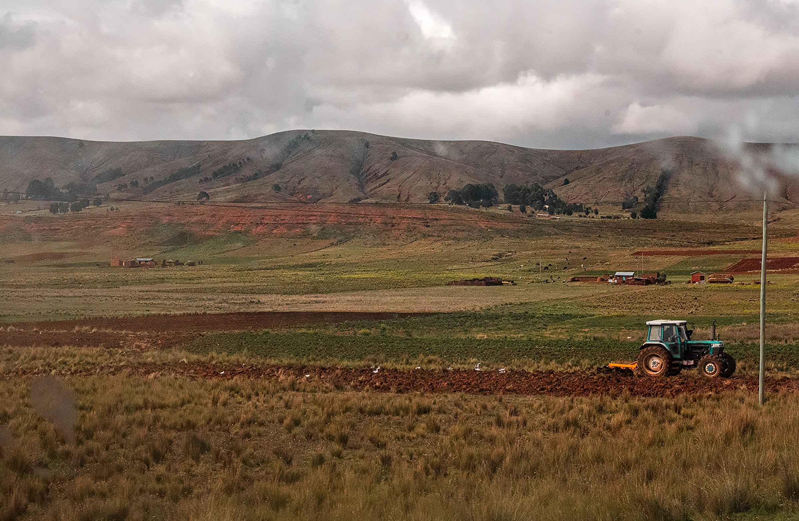
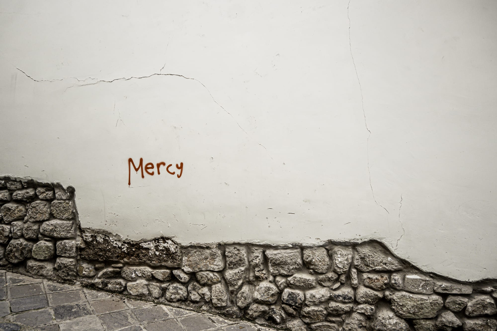
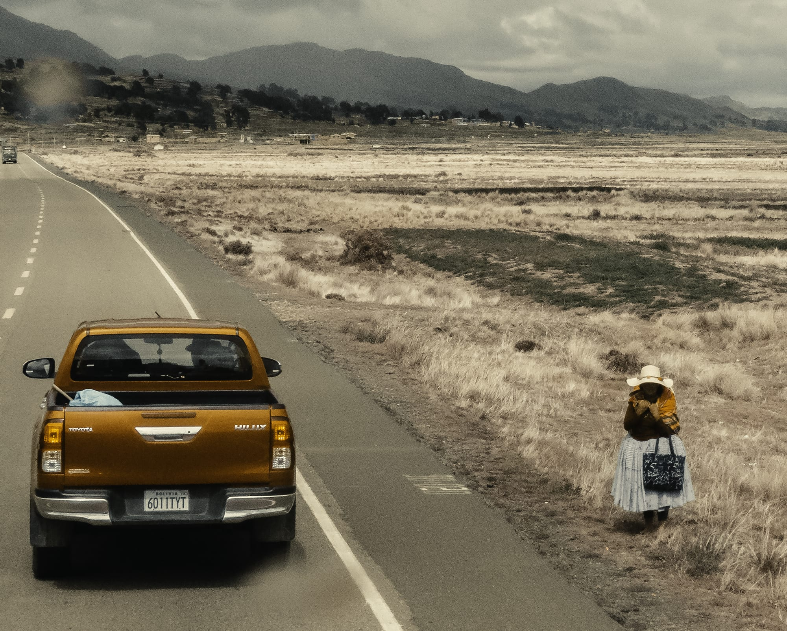
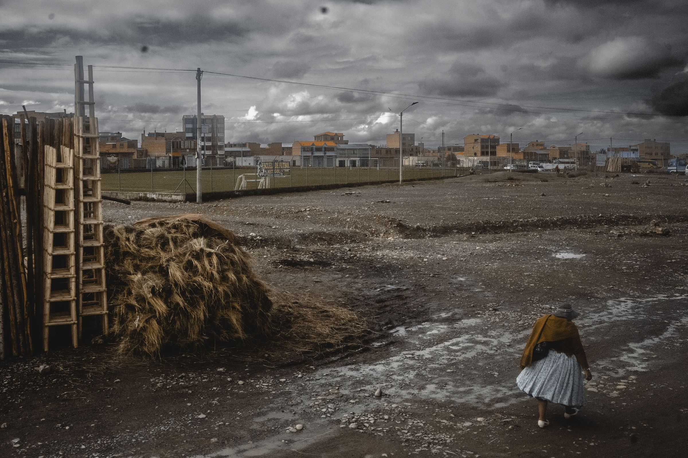
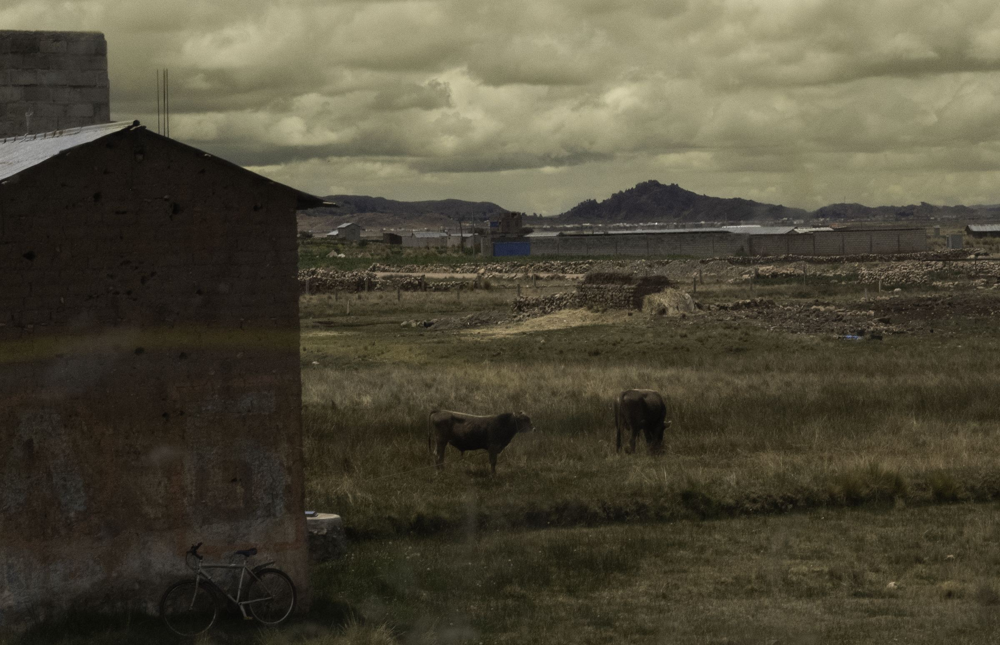
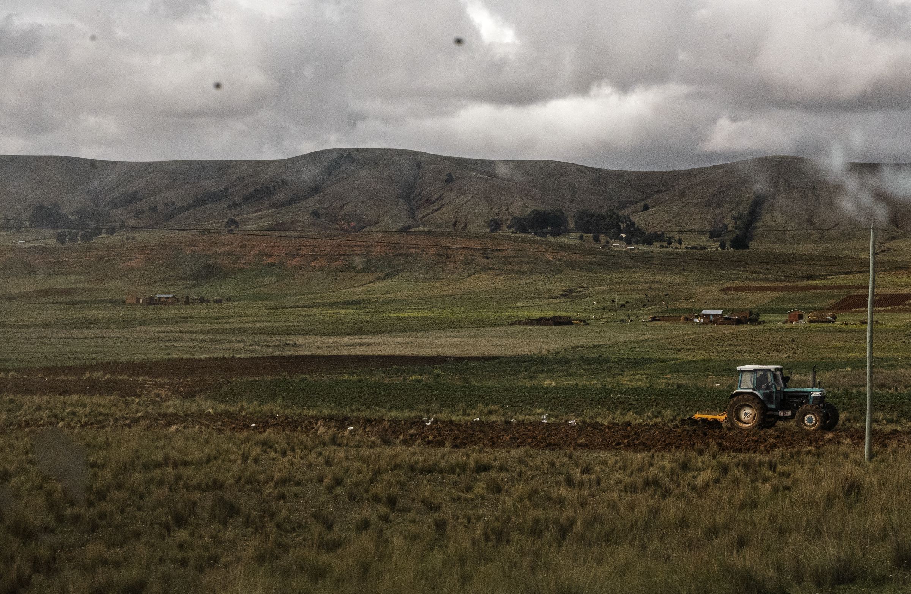

Sixty-nine photographs, and where they actually are.
Every image on the site, shown at its own true shape — no crop, one fixed height,
width free. That is the layout I want to move the galleries to, so this page is also the
demonstration. Nothing has been changed yet.
69Master photographs across four country folders
83Files shipping on the site today
12Are the same photograph shipped twice
2Section cards show the wrong section
What I found
Three things, in order of how much they matter.
Two section cards show a photograph from a different section. The card for
Silver & Bone is a Thin Air & Cloud Forest picture; the card for The Stone
Road is a White City & Deep Canyon picture. A visitor choosing where to join the Caravan is
being shown the wrong place.
Twelve photographs ship twice. Every section card and both home images are a
second copy of a gallery photograph under a new filename. home/hero.jpg and
home/patagonia-road.jpg are the same picture as each other and as
the-end-of-the-road/07-patagoina-01 — the same Patagonian road appears three times.
And inside Both Shores, two files with nearly the same name are visually identical.
The edit is very uneven. Patagonia has 21 photographs. Atacama has 4. That is
not a considered edit, it is whatever survived the import — and it makes the Caravan feel like a
Patagonia trip with some Andes attached.
What I'd do about it
Fix the two wrong cards first. Ten minutes, and it is a factual error.
Stop shipping duplicates. One photograph, one file, referenced from wherever it is needed.
That is 12 fewer files and no visual change at all.
Rebalance towards 6–8 per section. Patagonia loses about half — your call which
half — and the four thin sections want more. If there are more Atacama and Bolivia frames
on your drive that never made it into these folders, this is the moment.
Every section, as it stands
Shown the way the galleries should work: a common height, each photograph keeping
its own width. Portraits stay portrait, panoramas stay panoramic, nothing is cut.
— place not derivable from the filename — · 202505-z8n9873-copy.jpg2400×2400 · 1120 KB · master 4000×4000 79.6 MB1120 KBplace?
Both Shores
Lake Titicaca · Peru / Bolivia · 6 photographs
Two of these are the same photograph: 01-drive-la-paz-puno-05 and 06-drive-la-paz-puno-05 come from two different master folders with almost the same name, and are visually identical.

The La Paz–Puno road · 202501-drive-la-paz-puno-05.jpg2400×1567 · 632 KB · master 4000×2610 53.8 MB632 KB

The La Paz–Puno road · 202502-drive-la-paz-puno-09.jpg2400×1600 · 407 KB · master 4000×2667 49.1 MB

The La Paz–Puno road · 202503-drive-la-paz-puno-10.jpg2400×1925 · 927 KB · master 4000×3208 60.8 MB927 KB

The La Paz–Puno road · 202504-drive-la-paz-puno-01.jpg2400×1600 · 841 KB · master 4000×2667 56.1 MB841 KB

The La Paz–Puno road · 202505-drive-la-paz-puno-04.jpg2400×1550 · 473 KB · master 4000×2584 48.0 MB

The La Paz–Puno road · 202506-drive-la-paz-puno-05.jpg2400×1566 · 764 KB · master 4000×2610 53.8 MB764 KB
These are the duplicates. Orange means the card shows the wrong section.
— place not derivable from the filename — · 2025andean-caravan.jpg1800×1200 · 385 KBplace?also in the-end-of-the-road— place not derivable from the filename — · 2025atacama.jpg1800×1222 · 555 KBplace?also in atacama— place not derivable from the filename — · 2025both-shores.jpg1800×1443 · 767 KB767 KBplace?also in both-shores— place not derivable from the filename — · 2025desert-coast.jpg1800×1800 · 577 KBplace?also in desert-coast— place not derivable from the filename — · 2025silver-and-bone.jpg1800×1247 · 579 KBplace?shows thin-air-cloud-forest— place not derivable from the filename — · 2025the-end-of-the-road.jpg1800×1199 · 344 KBplace?also in the-end-of-the-road— place not derivable from the filename — · 2025the-mirror.jpg1800×1200 · 533 KBplace?also in the-mirror— place not derivable from the filename — · 2025the-stone-road.jpg1800×1047 · 458 KBplace?shows white-city-deep-canyon— place not derivable from the filename — · 2025thin-air-cloud-forest.jpg1800×1272 · 726 KB726 KBplace?also in thin-air-cloud-forest— place not derivable from the filename — · 2025white-city-deep-canyon.jpg1800×1141 · 366 KBplace?also in white-city-deep-canyon— place not derivable from the filename — · 2025hero.jpg2560×1706 · 476 KBplace?also in the-end-of-the-roadPatagonia, Chile · 2025patagonia-road.jpg2560×1706 · 453 KBalso in the-end-of-the-road— place not derivable from the filename — · 2025intro.jpg2400×1600 · 694 KB694 KBplace?
Where I need you
Captions are going to read place, country, year. I can derive that from the
filename for 49 of the 83 images. For these 34 I cannot, because
the filename is a camera number or a word I can't place. Write the place next to each family and I
will do the rest.
Also worth confirming: everything is
captioned 2025, taken from the folder names — the atacama folder has no year on it.
And london appears on three Peru photographs used in the Arequipa section, which I
assume is not the city.
What happens once you've decided
A pipeline script. Your masters stay exactly where they are, untouched and
still ignored by git. One command reads them and writes what ships: 2000px on the long edge, AVIF
and WebP with a JPEG fallback, each photograph keeping its own ratio. Re-runnable, so a re-edited
master just gets regenerated.
Proof before commitment. Before anything replaces what's live I'll show you
1:1 crops of the astro frames and the Patagonian gradients at the new setting, so you judge the
compression rather than taking my word for it.
The galleries stop cropping. Fixed height, free width, no rounded corners, and
the terracotta and blue bands currently painted over every first and third image are removed.
Captions get rendered. Place and year under the plate, a full description in
the alt text for screen readers, and one provenance line stating every photograph on the site was
made on this route.